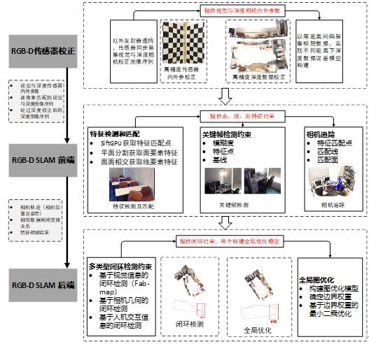

The subject propose an RGB-D high-precision SLAM method integrating visual and geometric features to achieve the large-scale and high-precision indoor 3D detection of robots with RGB-D sensors. [Cerf.] [PPT]
Abstract
This project proposes that the RGB-D high-precision SLAM method integrating visual and geometric features. Based on the high-precision sensor and depth data correction model, we use a camera tracking algorithm combined with visual point features and geometric line features to obtain high-precision camera trajectories. Through multi-type closed-loop detection scheme to improve the accuracy and stability of closed-loop detection, a “global optimization model” based on graph optimization is constructed to realize large-scale high-precision indoor three-dimensional detection of robots equipped with RGB-D sensors. This method improves the accuracy of RGB-D sensor SLAM from three aspects. Firstly, in the depth data correction, the working principle of RGB-D sensor is deeply explored, and the depth data acquisition model is obtained. The original grating error of the depth camera is modeled, thereby improving the accuracy of the depth data and expanding the effective measurement distance of the RGB-D sensor. Secondly, in the camera tracking method, it is not limited to adopting a single visual feature, and the method of joint optimization of visual features and line surface geometric features is adopted to improve the tracking precision and stability of the sensor. Finally, for the error accumulation problem, multi-type closed-loop detection schemes are adopted, including visual features based on camera position and interactive closed-loop detection to improve the accuracy of closed-loop detection and construct a “global optimization model” based on graph optimization
融合图像与几何特征的机器人室内定位与三维感知
摘要
本课题提出，集成视觉与几何特征的RGB-D高精度SLAM方法，在高精度传感器和深度数据校正模型基础上，采用视觉点特征与几何线面特征联合的相机追踪算法，获取高精度相机轨迹，通过多类型闭环检测方案提高闭环检测准确度及稳定性，构建基于图优化的“全局优化模型”，实现搭载RGB-D传感器的机器人大范围高精度室内三维探测。该方法从三方面提高RGB-D传感器SLAM精度，首先在深度数据校正中，深入挖掘RGB-D传感器工作原理，获取其深度数据获取模型，对深度相机原始光栅误差进行建模，进而提高深度数据精度，扩大RGB-D传感器有效量测距离。其次在相机追踪方法上，不局限于采用单一视觉特征，采用视觉特征与线面几何特征联合优化的方法，提高传感器追踪精度及稳定性。最后，针对误差累积问题，采用多类型闭环检测方案，包括基于视觉特征、基于相机位置、交互式的闭环检测，提高闭环检测准确性，构建基于图优化的“全局优化模型”。
绪论
1.1 研究背景
据美国环保署一项为期5年的跟踪调查研究发现，人的一生有70%以上的时间是在室内度过的。除了在家中生活，人们的交流、休闲、消费等活动主要集中在大型商超、会议中心、酒店、机场、车站等室内空间，这些室内空间存在大量服务型机器人，为了使机器人完成各种特定的室内任务，需要利用机器人搭载的环境探测传感器实现室内机器人的自主定位与三维感知。而传统的二维地图已经难以满足这些复杂的室内应用，精细的室内三维空间信息探测技术成为支撑机器人室内自主定位与三维感知等应用的重要技术手段[1, 2]。
目前，常用的室内场景三维探测手段主要有激光扫描（Terrestrial Laser Scanning）和基于视觉图像序列的三维重建技术。激光扫描技术进行室内三维感知时需提前设置拍摄点和标靶，在复杂室内环境中容易出现场景细节丢失，数据采集不完整的问题，同时激光扫描设备价格昂贵，难以得到普及。基于视觉图像序列的三维重建技术可通过数码相机拍摄的二维图像序列来恢复室内三维场景，其丰富的视觉信息可很好的增强闭环检测。然而该方法建模时间长，而且在室内昏暗环境或者纹理匮乏区域工作不稳定。因此发展一种能够快速响应环境变化，便携性高，数据处理工序简单，高精度实时的室内三维感知的方法，具有重要实用意义。近年来，融合图像和几何特征的RGB-D传感器，如Kinect V1，和Structure Sensor等， 在室内即时定位与地图构建应用上被广泛使用。该类传感器与传统激光测图原理不同，基于结构光实现距离量测。其硬件由激光投射器，光学衍射元件（DOE）和红外摄像头三大核心器件组成，激光投射器发射后先通过DOE扩散为随机光斑，然后复制成多份投射到被摄物体上，深度信息可通过发射的红外光斑与反射的红外光斑强度差解算出来，可以每秒30帧的速率同步输出640*480的深度和视觉图像，有效距离在0.5m-5m左右，经过数据校正之后可达7m的量测距离。该类设备具有距离信息实时获取，便携性强，价格低廉等优点，适合机器人室内环境下的实时自主定位与三维感知[3]。
1.2 研究意义
随着计算机视觉和人工智能的发展，机器人已经开始代替人类执行大量的工作，尤其是在具有高自动化需求的室内机器人应用中更是得到了很大的拓展。目前室内机器人最成功的应用领域是汽车制造业[4]，除传统的焊接应用外,室内机器人在机床上下料、物料搬运码垛、打磨、喷涂、装配等领域也得到了广泛应用。另外在电子产品制造、食品加工、医疗卫生等各个行业[5]，室内机器人也承担着越来越重要的任务。同时，随着智能服务业的快速兴起，室内机器人己经开始服务于我们生活的多个方面，如扫地机器人、智能管家机器人、娱乐机器人等[10]。在人工智能方兴未艾的今天，室内智能机器人的应用场景相信会更加广泛。
室内智能机器人如若在复杂未知的环境中进行探测，其自主定位与三维感知的能力必不可少，如何根据周围环境的信息进行自身定位，如何避开场景障碍物，引导机器人安全行驶，这是室内机器人首要解决的问题。在已知环境下的机器人室内自主定位和三维感知目前已经有了较好地研究进展，然而由于室内环境容易变化和频繁人流的干扰，这就要求室内智能机器人必须利用自身的传感器动态解决未知环境下的自主定位和三维感知问题。SLAM技术（Simultaneous Localization and Mapping，同时定位与构图）的产生，为室内智能机器人实时计算自身的位置和姿态，感知周围环境信息，并合理规划自身的运动路径提供了技术基础。因此，本项目以摄影测量和计算机视觉技术为基础，利用RGB-D传感器能同时获取室内空间环境几何与图像信息的优点，提出了一种融合图像与几何特征的机器人室内自主定位与三维感知的方法，大大提高机器人对室内三维环境的感知能力与定位精度。
1.3 研究方法
本课题的总体技术路线按照RGB-D三维探测流程分为RGB-D传感器校正、RGB-D SLAM前端，以及RGB-D SLAM后端三个阶段，具体请参考图1。

Figure.1 Technology Route
RGB-D传感器校正
RGB-D高精度传感器校正是RGB-D传感器用于室内高精度三维探测的基础，因此采用RGB-D传感器进行室内三维探测前需首先对其进行校正。校正内容分为两个部分，第一部分是传感器内外参数校正，可获取视觉与深度传感器内外参数及两传感器间的相对变换关系，第二部分是深度数据校正，通过等距离采集标靶数据，对不同距离下的深度数据构建误差模型，获取经过校正后的深度图像。RGB-D SLAM 前端
在传感器校正的基础上，可获取视觉与深度传感器内外参数，逐像素匹配的视觉与深度图像序列及经过深度校正后的深度图像序列作为RGB-D SLAM前端输入。RGB-D SLAM前端包括三个部分，分别是特征检测和匹配、关键帧检测、相机追踪。特征检测和匹配采用SiftGPU获取视觉特征匹配点，通过平面分割获取面要素，进而通过面要素相交提取线性特征，其中线状要素和面状要素匹配是本节研究重点。关键帧检测可有效剔除低质量数据帧，降低数据冗余问题，拟采用图像模糊度、特征点匹配率约束及基线约束实现关键数据帧筛选。相机追踪方面，将联合特征点要素，线要素构建联合优化模型，实现数据帧融合。RGB-D SLAM 后端
在前两步骤的基础上，可获取到相机轨迹，相邻数据帧间变换关系以及特征检测结果，将作为RGB-D SLAM后端处理输入。RBG-D SLAM 后端包括两部分内容，第一部分为闭环检测，本课题拟采用多类型方法进行联合闭环检测，包括基于视觉信息的、基于相机几何信息的，以及基于人机交互信息的闭环检测方案，以此避免单一闭环检测缺陷，提高闭环检测成功率及稳定性。全局优化方面，在闭环检测以及相机追踪的基础上，构建相机轨迹优化图模型，考虑到加入的闭环约束精度不同，对不同精度的闭环赋予不同的权重，调整其在优化模型中的贡献，最后通过迭代优化整体相机姿态信息，将闭环误差降低到最小。
本项目以基于室内机器人的RGB-D相机为研究对象，针对RGB-D传感器SLAM过程中有效量测距离短、连续定位精准不足等关键问题，在现有的SLAM框架基础上，分别从RGB-D传感器校正及3D SLAM两方面提升RGB-D传感器室内三维探测精度从而实现机器人的高精度自主定位与三维感知。因此，本课题的研究内容可划分为以下内容:RGB-D传感器高精度校正方法
高精度传感器校正是RGB-D传感器用于高精度三维探测的基础。在视觉传感器与深度传感器内外参数校正方面，数据采集上将采用遮挡红外发射器的方式同步采集视觉相机彩色图像及深度相机IR波段图像，通过融合控制点的方式采用针孔模型构建视觉传感器与深度传感器联合校正模型，最后通过最小二乘方式实现两传感器的联合校正；在深度数据误差校正方面，本项目拟从深度传感器硬件构造入手，分析深度数据误差来源，一方面采用深度真值优化传感器系统参数，另一方面在前者的基础上，针对原始光栅差误差构建深度数据误差模型，通过最小二乘方法获取深度数据误差模型参数。因此，RGB-D传感器高精度校正包括以下内容：- RGB-D视觉与深度传感器内外参联合校正；
- RGB-D深度数据误差校正。
3D SLAM中集成视觉特征与几何特征优化方法
RGB-D传感器在长时间相机追踪的过程当中容易产生误差累积，因此实现高精度的相机追踪是采用RGB-D传感器进行室内探测的重要保证。本项目拟从3D SLAM中相机追踪，闭环检测和全局优化三个步骤来对现有的RGB-D 3D SLAM方法进行优化。相机追踪方面，不局限于采用单一视觉特征，充分利用传感器同步输出视觉和深度图像特点，采用视觉特征与线面几何特征联合优化的方法，提高传感器追踪精度及稳定性。闭环检测方面，采用多类型闭环检测方案，包括基于视觉信息，相机姿态约束和知识约束三种闭环检测方案，有效避免闭环丢失或检测错误等问题。全局优化方面，本项目拟采用边界权重的图优化算法，考虑到相机追踪产生的随机误差，对不同类型的闭环约束赋予不同的权重，优化图优化模型，提高算法收敛度，有效降低累积误差。因此集成视觉与几何特征的RGB-D传感器3D SLAM方法包括以下内容：- 集成视觉与几何特征的相机追踪方法；
- 多类型闭环检测方法；
- 边界权重的图优化方法。